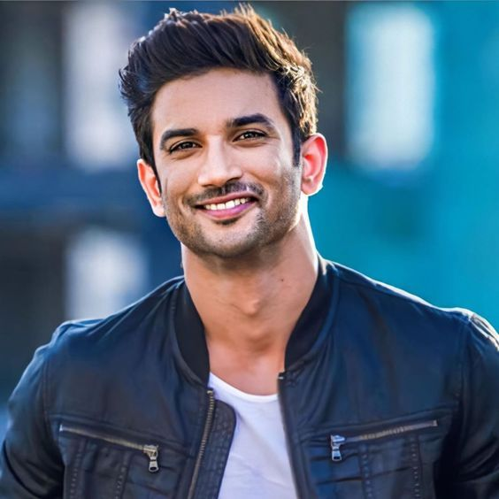

A Tribute to Sushant Singh Rajput

"Sushant Singh Rajput- The Youth inspiration"
| Born | Sushant Singh Rajput born on 21 January 1986 in Patna,Bihar. |
| Family background |
|
| Education & Qualification |
|
| Career | Rajput began his acting carrier after dropping out of his engineering course at Delhi College of Engineering and entering the theatre industry in Mumbai. |
| Debue in the acting Industry | His first debue show was the romantic drama "Kis Desh Mein Hai Mera Dil" followed by the lead role in soap opera "Pavitra Rishta". |
| Films | He made his film Debut with the film "Kai po Che!" .He followed up his role in romantic comedy "Shudh Desi Romance" and the titular detective in the action thriller Detective Byomkesh Bakshy!. |
| Awards and Nomination | Sushant Singh rajput got many awards in his lifetime.
|
| Skills and Work | Even as a student,Sushant Singh Rajput secured AIR 7.He also cleared 10+ engineering entrence exams. And if that's not enough,he even bagged the National Olympiad Winner medal in Physics.He then passed the same energy into his acting career and turned from nothing to something. |
| Death | Sushant Singh Rajput died on 14 June 2020 in Mumbai,Maharashtra India |
| Popular quote of Sushant Singh Rajput | "I am learning the importance of living in the moment" |
To know more detail check out Sushant Singh Rajput on wikipedia.